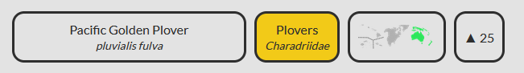

So basically you guess a bird in the database, and then we tell you how right you are. There's a new bird every day, your local time. It's quite literally wordle adapted for birds.
Not specific enough? Fair enough. Let me explain:
Firstly, you can listen to the recording provided to get an idea of what the bird is.
In the case that the recording does not identify the bird well (perhaps there were multiple foreground birds), or you just want to listen to another recording of the bird, there is a button to load a second recording.
Then, you make a guess. Search the database for your bird in the search box. Our database doesn't have every bird, but it is guaranteed to have the bird which is the answer. If you're still unsure, give it your best shot! You have 6 guesses after all.
You'll get a result like this:

The first section gives the common name of the bird you guessed, and the scientific name. If you got the correct bird, it will have a green background, and you win the game.
If you got one part of the scientific name right (the genus or specific epithet), the background will be orange. And if neither is right, it will be grey.
The second section tells you about the broad relationships between the bird you guessed and the actual bird. If they're in the same family of birds, the backgroud will be green.
If they're in the same order (a group of related families), the background will be orange. This may or may not be especially helpful, as more than half of all living bird species are in the order of perching birds.
If they are not only in different families but in different orders, the background will be grey.
The third section shows the native regions of the bird you guessed. If any are highlighted green, it means the solution bird is also native to that region!
The fourth tab gives the average length of the bird in centimetres, and whether the solution bird is longer or shorter. If the bird you guessed is close in size (within 4 cm), it will show with an orange background, and if it's the same size, it will have a green background.
Keep in mind that there is variation in size between different birds of the same species, and different sources give different average lengths, so the sizes in our database might be 1-2 centimetres off from what you're used to.
Happy Guessing! Click the green button to continue.